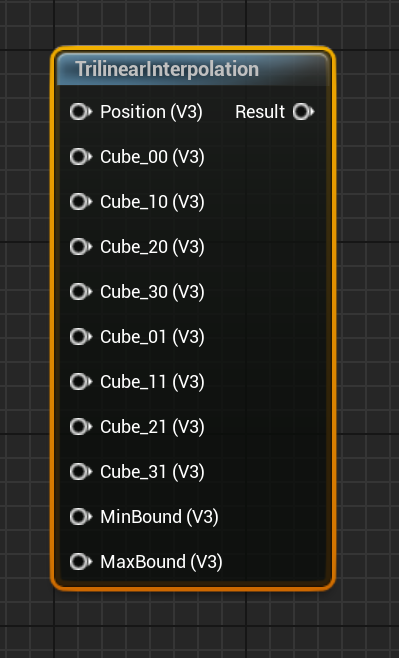
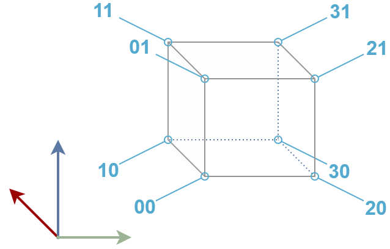
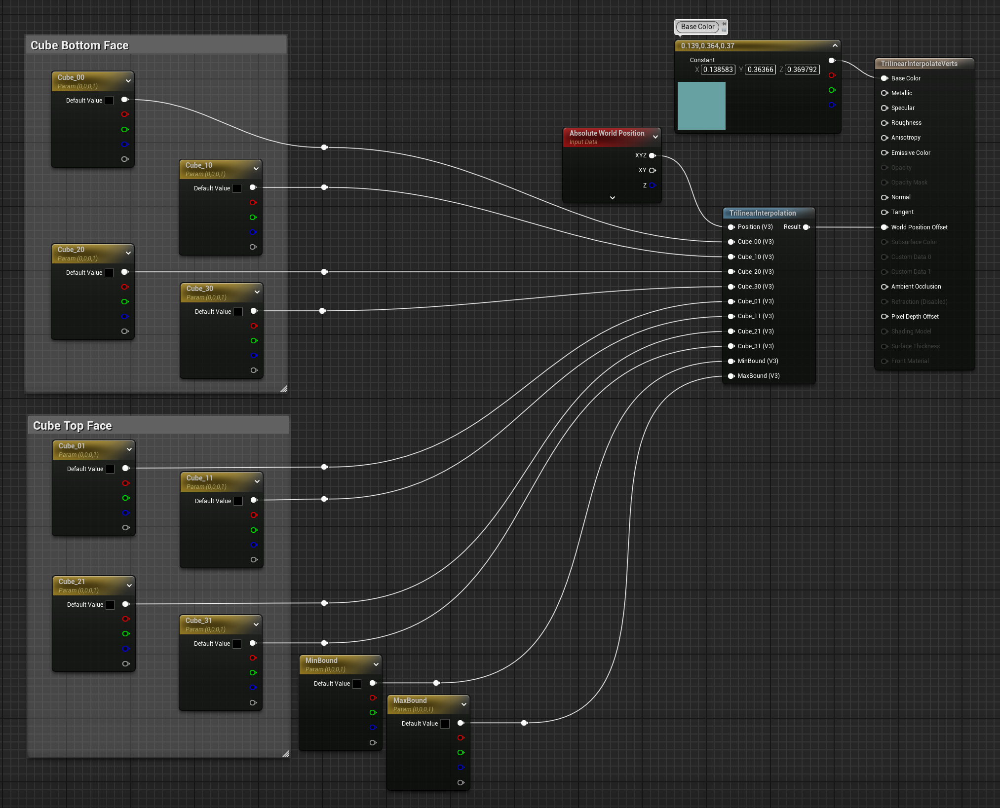
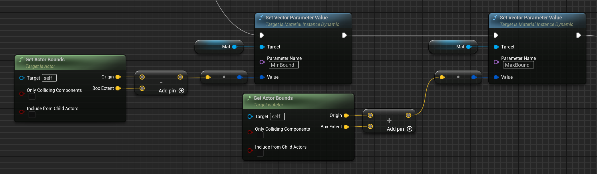
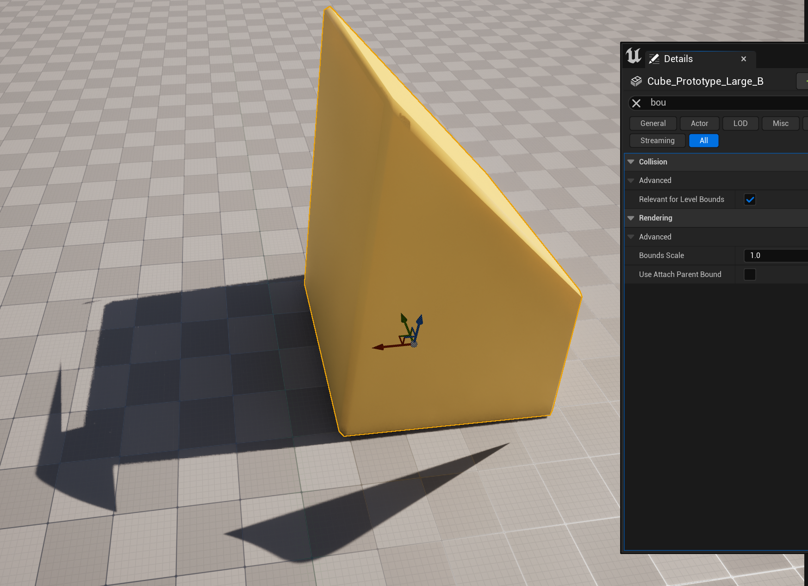

Trilinear Interpolation Materials
Setup
The interpolation functionality is encapsulated in a single Material Function, which can be found under NB - Interpolation > Trilinear Interpolation

The Inputs are: A point or position you wish to transform (usually just the absolute world position), 8 Cube_XX values, which define the lattice offsets,
and the original (untransformed, scaled, or otherwise modified) bounds of the mesh you wish to transform.
It will output a float3, which can be directly used to drive the World Position Offset in your material.
The Cube_XX values refer to the corners of the lattice used to deform the mesh, with the first four values (X0)
defining the bottom four corners of the lattice and the last four (X1) defining the top four corners:

A complete example in which all interpolation values are driven by parameters (e.g. so you can manually adjust them in a blueprint):

Because we are using the Absolute World Position as the position to transform, we need to ensure that MinBound and MaxBound values are also in world coordinates.
This can be done easily using Get Actor Bounds in the blueprint passing this information to the material:

This is usually the most straightforward approach, but if for some reason you are not working in world coordinates it is important to remember that the bounds and the point passed in for transformation must be in the same coordinate frame.
If you just intend to use the interpolation to make your object a little jiggly or bounce in response to some other material parameter, though, it's not necessary to expose these values as parameters, you can drive them entirely within your material.
For example, the following material will move only the top of the lattice over time, causing the mesh to stretch up and down vertically. Because the bottom of the lattice is not being changed, the base of the mesh will remain fixed in place, allowing for a bouncy animation without the mesh moving off of the ground. This allows you a lot of freedom to stretch and twist the mesh as you want, while still being able to constrain it to keep one side fixed in place.

Tips
Bounds Scale
If you use World Position Offset to create a large deformation in an object, this can lead to some very ugly shadow artifacts:

This can be fixed by increasing the bounds scale:

But, depending on how you are computing the original mesh bounds you may notice that this changes the effect of the Trilinear interpolation! (notice the bottom corners of the cube above are no longer correctly aligned with the ground)
If you are NOT passing the original (unscaled) object bounds as a material parameter but are relying on one of the Object Bounds or Object Local Bounds nodes, then you
will need to compensate for the bounds scale in the material. If you know you will always use a constant bounds scale you can use a constant value in the material,
or you can use a paramter to allow it to be set by an actor blueprint any time the bounds scale is changed or set to a fixed value in different material instances:
 In this example, we are using a parameter which is expected to be the inverse of the bounds scale, so if the bounds scale is set to
In this example, we are using a parameter which is expected to be the inverse of the bounds scale, so if the bounds scale is set to 2.0 this parameter should be
set to 0.5. This avoids the possibility of dividing by zero by mistake, but it would also work to use the bounds scale directly and replace the multiply node with
a divide.
For any questions, help, suggestions or feature requests, please feel free to contact me at nbpsup@gmail.com